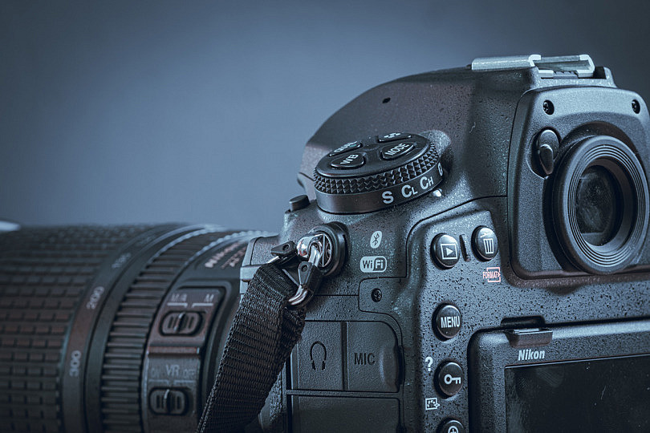

La combinación de fotografía y video es muy poderosa, ya que ambos medios se complementan para contar historias de manera más completa:
Fotografía
Captura momentos específicos, congelando un instante en el tiempo. Las fotos permiten enfocarse en detalles o emociones concretas, como una sonrisa o un paisaje. Cada imagen cuenta su propia historia, y en un contexto profesional, puede incluir retoques y edición artística para mejorar el impacto visual.
Video
Mientras la fotografía inmortaliza un instante, el video narra el transcurso del tiempo. El video capta movimiento, sonido y secuencias completas, permitiendo revivir momentos de manera más envolvente. Ya sea que se trate de una ceremonia, una entrevista o un momento cotidiano, los videos añaden un nivel adicional de contexto y emoción que no se puede obtener solo con imágenes fijas.
Edición de video
Los videos se editan para crear secuencias fluidas, con transiciones suaves, efectos visuales y música de fondo que complementan la narrativa. Esto puede incluir desde videos cortos con momentos clave hasta producciones más largas y elaboradas, según la finalidad.
Usos
La combinación de fotos y videos es perfecta para eventos como bodas, cumpleaños o cualquier tipo de celebración. Las fotos capturan los momentos emblemáticos, mientras que el video documenta la atmósfera completa y las emociones del día.